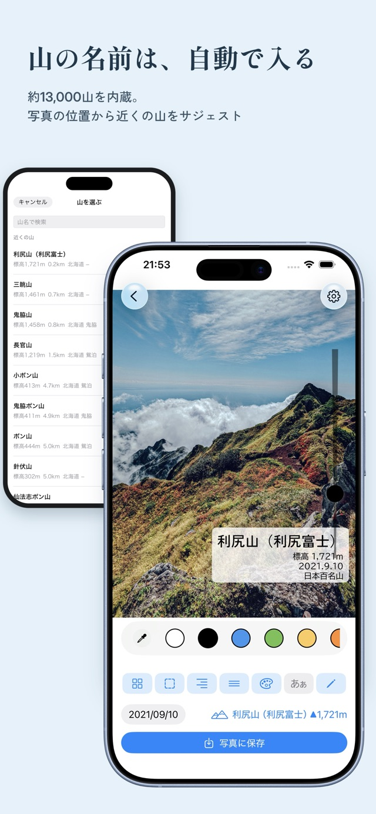

登山記念
登山写真に、山名・標高・撮影日を。
山で撮った一枚に、登った山の名前や標高、撮影日を文字入れ。大切な山行を、写真と一緒に残すiPhoneアプリです。

登った山を、写真に刻む。
- 写真の位置情報をもとに、近くの山を候補として表示。
- 山名・標高・撮影日を添え、文字の見た目を調整。
- 仕上げた写真を保存して、山の思い出を共有できます。
使い方と情報の取り扱い。
写真や位置情報の取り扱いはプライバシーポリシーで確認できます。使い方や購入に関するご質問はサポートをご利用ください。